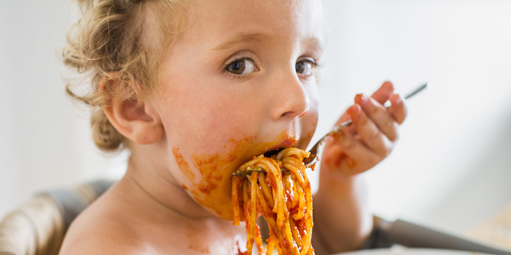

One of my very favorite things to do is to cook. I actually LOVE chopping onions. Here is one of my hero's, Gordon Ramsay, chopping chives or herbs.
I not only love to cook, but I also love to eat. Eating is best with people, and there's nothing quite like cooking a 5 star meal and seeing how impressed the friends are! 

When I was three years old I remember asking my mother if I could try out the violin. I loved to listen to classical music and my first instrument thus became the violin. 23 years later, I still play around with it BUT I have shifted to several more instruments!

Sometimes all I want to do is just hang out: Netflix or Hulu and some great food or company. Sometimes its the simple things in life that make the moments from A to B more pleasant.